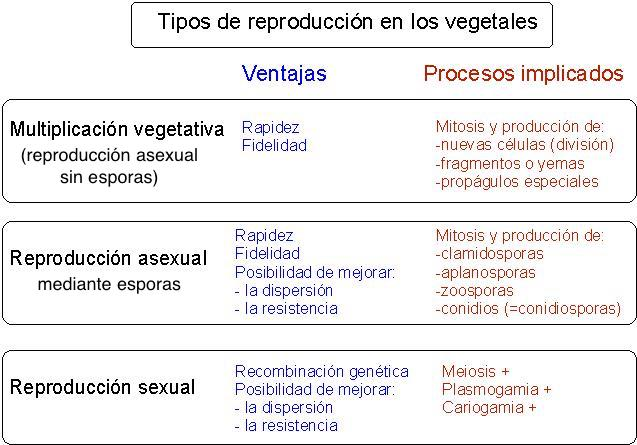
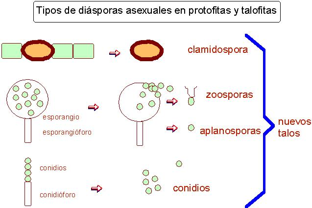

Tema 4(1).-Principios
básicos de Botánica: reproducción
"Reproducción asexual:
multiplicación vegetativa, mitosporas y mitosporangios.
Reproducción sexual: meiosporas. Alternancia de generaciones y
fases nucleares. Ciclos de vida."
1er. guión para el tema 4 del programa de Botánica I (2º
del Grado de Biología)
C. Romero Zarco,
Departamento de Biología Vegetal y Ecología, Universidad de
Sevilla, 2002-2017. Guiones: [1] [2] [3] [4]


4 de octubre
de 2002 / 25 de enero de 2017
Referencias
Díaz González, T.E. (2004) Curso de Botánica, Ediciones Trea
S.L., Gijón
Izco, J. (1997) Caracteres taxonómicos, en Izco & al. Botánica,
cap. 4. Ed. McGrau-Hill
Strasburger, E. & al. (1986) Tratado de Botánica, ed.
7ª, cap. V. Ed. Marín